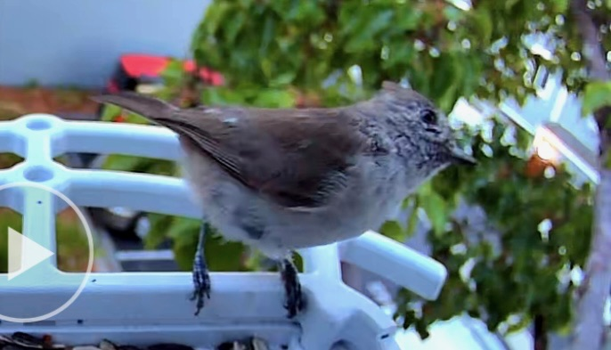

Travis Barton
Birds, nails,
& side quests.
ML engineer by day. Bird photographer, nail artist, and robot builder the rest of the time.
01
Bird Photography
Field shots from Bay Area birding. All photos from my shared album.
View full album →



02
Tech
Projects, writing, and build logs.
03
Nail Art
Design explorations and concept directions for upcoming sets.


About
I'm a machine learning engineer at Meta. This site is for the other stuff — robotics projects, AI tooling experiments, bird photos that deserve a better home, and nail art I want to keep track of.
I like building things just to see if they can exist, then turning the useful ones into demos, notes, and public build logs.